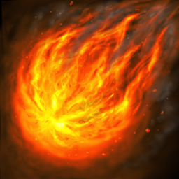
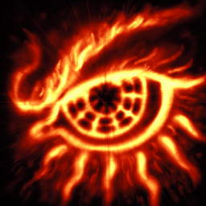
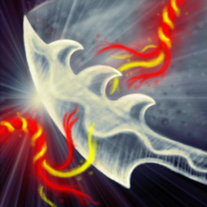
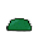
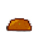
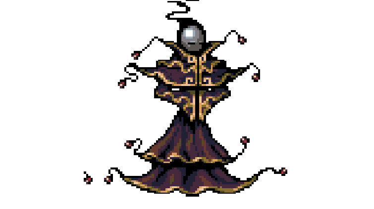
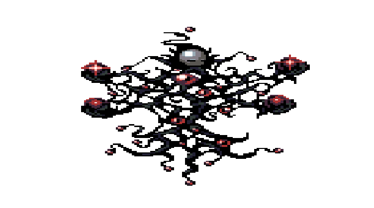
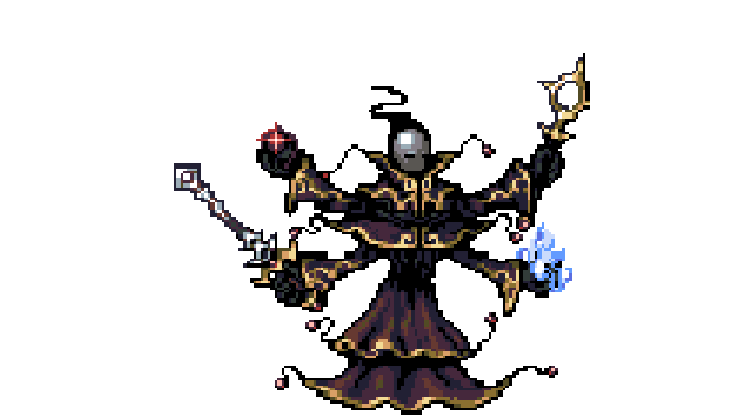

Memories Of Verleden


The world is at peace in the present. Everyone lives in balance and harmony. This world was called Verleden. But this wasn't like this in the past. Thousands of years in the past there were higher beings such as god and angels and demons. Their light blessed the people of the world with prosperity and richness. As light was casted, there will always be shadows that form. The darkness was filled with hate and envy of the light. Demons wreak havoc across the world and send the world in chaos. These two fractions battled and clashed each other to conquer. This continued endlessly. Until one war that ended everything… Now in the present, peace and harmony roamed the lands. Higher beings and demons were long forgotten and was considered as a fairy tale for children.
|  | Fireball- Cast a fire ball that does 200% total magic Damage. Leveling it up will increase multipliers. Able to critical strike. |
|  | Focus- Boost all total damage (physical and magical) by 200%. Starts at 5sec Active time. Leveling increases time active(+2). |
|  | Empower- An empowered sword strike. Deal 200% total physical damage. Leveling it up will increase multipliers. Able to critical strike. |
 |
Aura Shock- An AOE attack where an aura form around the player. Dealing 400% physical damage. Leveling up will increase damage multiplier. Uses ultimate bar. Can be only casted at 100% power. |
 |
Battle Heal- Heal 50% Health. Consume 50 power. Leveling decreases cooldown |
Thas Village |
A quiet town where, the past is unknown and a journey begins. It seems that Slimes are becoming a big problem there the gates, Will this be the start of a big adventure only one way to find out accept the challenge and create your story or keep the mysteries of Verleden a secret. |
Venta Town | Venta Town is home to the mages. The town is filled with a magical essence that gives power and mana to all who live there. However a dark secret is hidden in the town and good mages are becoming evil and losing there humanity to some dark power. Beware the roaming dark mages when Visiting. |
Wyas Village | A village far to the north in a dry wasteland. Wyas village is a quiet little place far to the north. they say there is a a cave somewhere nearby and inside you will find a piece of a hidden truth and a weapon of unbelievable power. |
Tenrs City | One of the most popular cities in all of verleden, if you are looking for potions, quests, equipment or a nice place to spend the night Tenrs is the place for you. Tenrs is an advanced city with lots of people seeking sanctuary from the invading demons. |
Slime 1-Level Varries Slimes are found all over the world, they are more annoying then dangerous. as a hero it is your duty to remove these pesky creatures and stop them from annoying travellers. |
|
|  | Slime 2-level varries Slimes are found all over the world, Some are dangerous some arent. But to be safe try to kill them all. |
|  | Slime 3-Level Varries Slimes are slimey, they are destroying the paths to the villages. Please just get rid of them all. |
|  | Dark Mage-A level 5 mysterious being which uses control of dark energy to create energy blasts it attacks you with. |
|  | Death Mage-Level 10. One of the stronger enemies you will encounter on your Journy the death mage has a touch that brings death to all it meets. |
|  | Void Mage-Level 15. One of the strongest class of mages to be found, they can control matter through share will. If you meet one keep your distance or you will become a part of the void. |